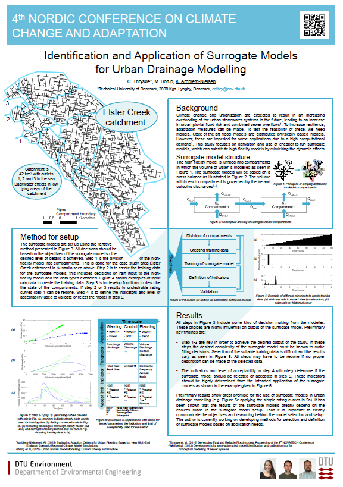

Additional material for poster at 4th NORDIC CONFERENCE ON CLIMATE CHANGE AND ADAPTATION. Here you can download the poster and access related publications by the author.
Thrysøe et al. 2016, "Devolping fast and reliable flood models"
Thrysøe et al. 2016, "Identification and Application of Surrogate Models for Urban Drainage Modelling"